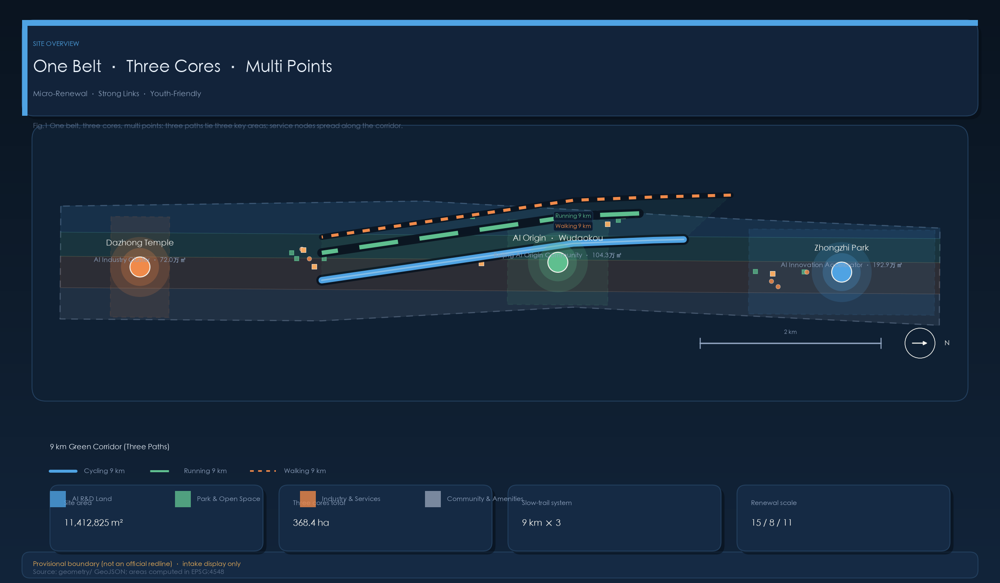
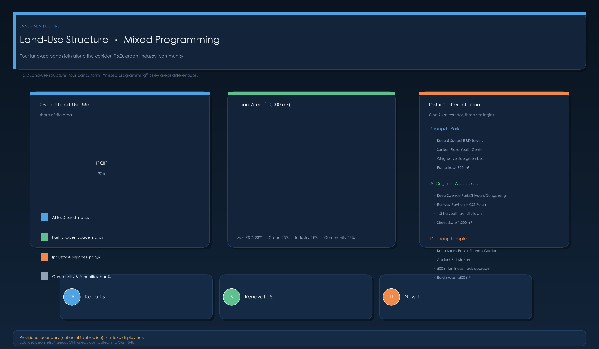
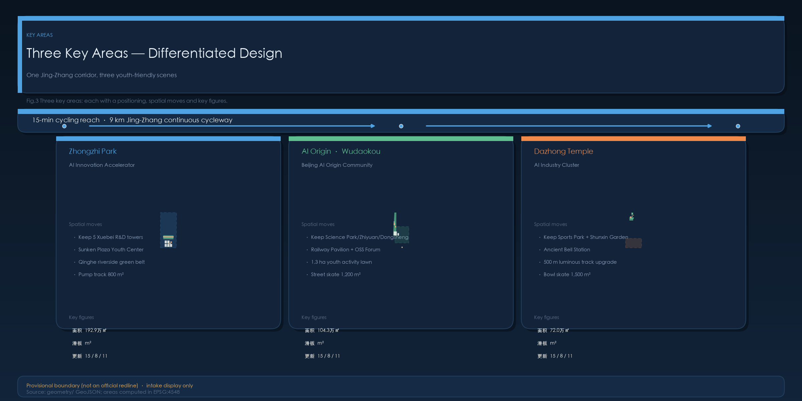
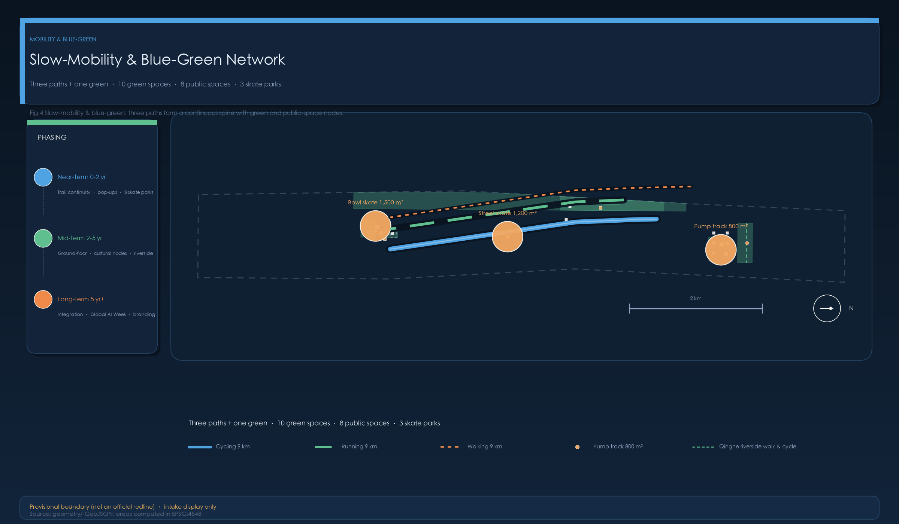
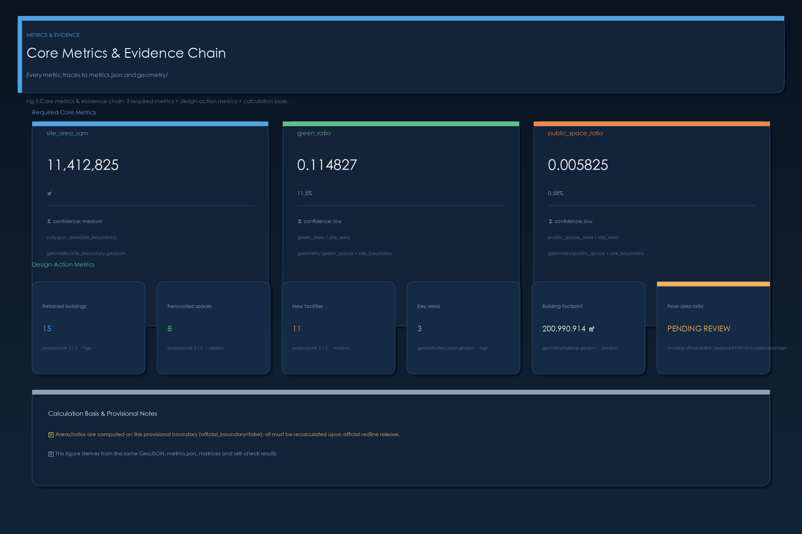

Strategic Research Scope
43.6 km²
AI industry ecosystem, three-zone two-wing coordination, future urban form and cultural narrative across the full territory.
Offline electronic exhibit; authoritative data still lives in GeoJSON, metrics.json, matrices and self-check results. This page turns the overview map, three-level scope, key areas, land-use zones, transport and slow traffic, blue-green public space, buildings and renewal projects, AI scenarios, core metrics, task coverage, self-check status, sources and assumptions into a human-readable visual narrative.
The overview map merges land-use zones, transport and slow traffic, blue-green public space, buildings and renewal projects, and AI scenario nodes into a single evidence sheet, so the "one belt, three cores, many nodes" spatial spine reads at a glance.
The proposal progresses from strategic research scope through overall design scope to key-area scope, binding industry assessment, urban renewal and detailed area design to layers and metrics.
AI industry ecosystem, three-zone two-wing coordination, future urban form and cultural narrative across the full territory.
Urban renewal framework, land-use structure, transport and infrastructure, Jing-Zhang Heritage Park vitality corridor; 19 renewal projects and a 9 km blue-green slow-traffic system.
Detailed design for the three key areas: functional programming, building renewal, public space connectivity and transport organization.
Each of the three key areas pairs an industrial positioning with spatial strategy, building and public-space interventions, transport interfaces and implementation notes.
Garden-style autonomous innovation district. Retain 5 R&D buildings (Xuebeiyuan) with ground-floor grey-space tuning; add sunken-plaza youth center, Qing River waterfront green belt and an 800 m² junior pump track.
University-adjacent technology transfer district. Retain Tsinghua Science Park, Zhiyuan Tower and Dongsheng Tower; add Railway Memory Interactive Hall, Open-Source Launch Hall, 1.3 ha youth lawn and a 1,200 m² street skatepark.
Urban intelligent economy district. Retain the Sports Park and Shunxinyuan; add the Ancient Bell Cultural Pavilion and a 1,500 m² bowl skatepark; luminous 500 m loop track.
Four land-use bands assemble west-to-east along the green corridor, alternating R&D, green fabric, industry and community into a "mixed programming" sequence.
2.67M m² · research campuses and sunken plazas
2.59M m² · Jing-Zhang corridor and riverfront
3.37M m² · incubators and commercial support
2.78M m² · community services and daily support
A "three trails + one green" 9 km slow-traffic system: cycle, run and walk lines run in parallel and link the three key areas — 15 minutes by bike between them.
Continuous corridor cycle route (ROAD-CYCLE-01) linking all three areas; connectors include the Qing River waterfront cycleway, Heqing Garden link and the Sports Park–Shunxinyuan route.
Continuous corridor running route (ROAD-RUN-01); the retained 500 m loop track at Dazhong Temple Sports Park upgraded with luminous timing.
Corridor walking route (ROAD-WALK-01) serving start-corral zones, pet-friendly zones and market lawns along the line.
Ten green spaces and eight public spaces form the blue-green skeleton; three skateparks (800 / 1,200 / 1,500 m²) build the youth extreme-sports network along the corridor.
Heritage Park corridor, Qing River waterfront, youth activity lawn, Heqing Garden, Sports Park, Shunxinyuan and more.
Sunken ecological plaza, rooftop garden, waterfront promenade, camping-market lawn, pet-friendly zones and more.
Gently rolling asphalt pump track, beginner-friendly, with a skatepark service kiosk.
1.2–2.0 m deep bowl hosting the extreme-sports league finals.
Micro-renewal driven: 15 retained, 8 renovated, 11 new — covering ground floors, rooftop gardens, cultural nodes and pocket facilities across three phases.
Xuebeiyuan A–E research buildings, Tsinghua Science Park complex, Zhiyuan Tower, Dongsheng Tower, Sports Park service center and more.
Five ground-floor grey-space upgrades in Zhongzhi Park, Tsinghua Science Park open interface, Dongsheng Tower ground-floor activation, luminous loop track upgrade.
Railway Memory Interactive Hall, Open-Source Launch Hall, Ancient Bell Cultural Pavilion, Sunken Plaza Youth Center, lawn service station, skatepark kiosk (6 lightweight buildings) plus 5 ancillary facilities.
Original evidence figures (dark tech style, bilingual), each traceable to geometry/ and metrics.json.





Ten concrete AI scenario cards (proposal.md §5.5), each naming area, spatial carrier, AI support, data sources, privacy boundaries, human review and operating entity, with a DPIA checklist.
Three on-edge pose-analysis fitness kiosks, 500 m start corrals, and company-run-group matching.
Live code wall, locally deployed AI-assisted code review, and a 1.3 ha youth lawn extension.
Half-court basketball, badminton striping, yoga stretch zone, sunken-plaza spectator seating.
200 m² semi-outdoor pavilion, 100–150 tiered seats, anonymous vote-driven playlists.
Download-free Web AR, 300 m² Interactive Hall, and ten AR trigger points along the line.
Three pet zones (600/500/500 m²), 10–20 stalls, and an on-site health check station.
800/1,200/1,500 m² venues reachable by 15-min bike ride; AI-assisted scoring, human judging decisive.
Glow-in-the-dark coating, RFID timing chips, two fitness kiosks, movable stands.
AI live bell accompaniment (bone-conduction output), digital bell-tower twin, soundscape capture.
Seven core showcase nodes, multilingual AI guide, on-edge compute and temporary network.
compliance_matrix.json covers Announcement sections 1.3/1.4/1.5 and agent.1–agent.6; standard_matrix.json and design_depth_matrix.json evidence professional standards and deliverable depth.
All six agent tasks are covered — industry assessment, urban renewal, transport and slow traffic, blue-green ecology, detailed key-area design, implementation and operations — with three-zone two-wing coordination and Jing-Zhang cultural narrative threaded throughout.
Professional review benchmarks goal fit, brand recognition, regional synergy, planning innovation, scenario tangibility, spatial clarity, translatability, presentation completeness, public compliance, international communication and long-term operation value.
Four layers of self-check — deterministic validation, spatial review, visual packaging and professional evidence review — kept in sync with this page, the report, the manifest and self_check.
This page loads no CDN, remote map tiles, external scripts, external fonts, API requests or iframes.
A classified source-evidence ledger plus a data-gap assumptions list, each with stated impact on design conclusions.
Sources are documented in sources.json, agent_taskbook.json, data/processed/agent_fact_pack.md and standards/references — 13 registered sources including 7 formal ones. ⚠ Most international case data and site statistics are agent-inferred from public data; formal evidence URLs, publishers, dates and cross-verification are pending.
Missing statutory controls, road redlines, land tenure, utilities, heritage lines and engineering conditions are documented in assumptions.json with explained impact on design conclusions. ⚠ Official SITE_BOUNDARY and KEY_AREA polygons are not yet available; all area and ratio metrics must be recalculated upon official geometry release.